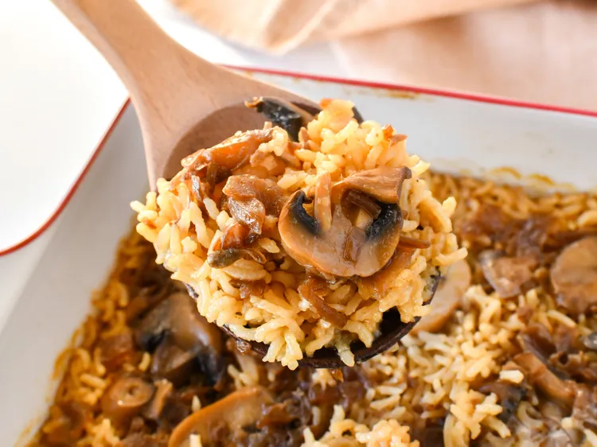

Easy Mushroom Rice
Make scrumptious mushroom rice in a casserole dish — it's as simple as can be!
Ingredients:
1 cup uncooked long-grain rice
1(10.5 ounce) can condensed French onion soup
1(10.5 ounce) can beef broth
1(4 ounce) can sliced mushrooms, drained
¼ cup butter
Steps:
- Gather the ingredients and preheat the oven to 350 degrees F (175 degrees C)
- Combine rice, condensed soup, beef broth, mushrooms, and butter in an 8-inch square casserole dish.
- Cover and bake in the preheated oven for 60 minutes
Home